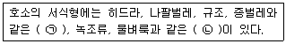
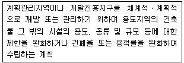
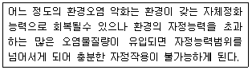
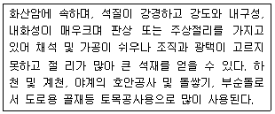
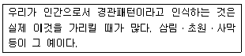
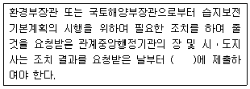
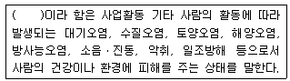
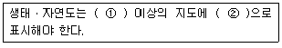
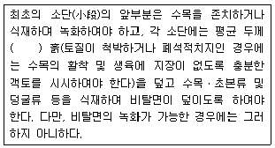

자연생태복원기사(구) (2010-05-09 기출문제)
1과목: 환경생태학개론
1. 해양에서 총 일차 생산량은 표층에서는 호흡량보다 크지만, 수심이 깊어질수록 점차 감소하여 어느 깊이에서는 호흡량과 같아져 순일차생산량이 생기지 않는다. 이 깊이를 무엇이라고 하는가?
- 광도 깊이(intensity depth)
- 보상 깊이(compensation depth)
- 임계 깊이(critical depth)
- 광저해 깊이(Photoinhibition depth)
(정답률: 57%)

2. 연안(coast)에 대해서 틀리게 설명하고 있는 것은?
- 육지와 해양 사이의 생태적 전이대이다.
- 해양기후 변화에 의하여 직접적으로 영향을 받는다.
- 연안 생태계는 육상식생을 포함한다.
- 연안은 해안의 농경지 생태계와 무관하다.
(정답률: 77%)
3. 개체의 부족이 과밀과 같이 제한 요인이 된다는 현상은?
- Shelford의 법칙
- Bancroft의 법칙
- Allee원리
- Polyclimax theory(다극상설)
(정답률: 73%)
4. 다음 중 극상에 가까울수록 나타나는 현상은?
- K-선택
- r-선택
- 정보량 적다.
- 엔트로피 높다.
(정답률: 75%)
5. 기후가 온난한 지역에서 주로 볼 수 있고, 무덥고 건조한 기후가 길기 때문에 화재가 중요한 환경의 일부가 되고 있다. 특히, 인도, 아프리카, 남미지역 등에서 우세하게 형성되는 식물군락은 무엇인가?
- 침엽수림
- 낙엽수림
- 열대 Savana
- 활엽수림
(정답률: 71%)
6. 다음 중 하구습지, 만, 갯벌 등과 같은 습지보호와 관련된 국제협약은?
- 바젤협약
- 람사협약
- 런던협약
- 파리협약
(정답률: 94%)
7. 생태계의 에너지 흐름에서 한 영양단계에서 다음 영양단계로 전달될 때에 전화 효율은 어느 정도인가?
- 10% 정도
- 20% 정도
- 30% 정도
- 40% 정도
(정답률: 55%)
8. 하천의 수질 및 수생태계 환경기준에 적합하지 않은 것은?(단, 환경정책기본법 상의 기준을 적용한다.)
- 매우 좋은(Ia)의 BOD 기준은 1mg/L 이하
- 좋음(Ib)의 BOD 기준은 2 mg/L 이하
- 약간 좋음(Ⅱ)의 BOD 기준은 3 mg/L 이하
- 약간 나쁨(Ⅳ)의 BOD 기준은 5 mg/L 이하
(정답률: 50%)
9. 제주도의 목장을 수십 년간 방치한 후 관목림과 활엽수림으로 바뀌었다. 이곳에서 진행된 천이는?
- 1차천이
- 2차천이
- 타생천이
- 종속영양적천이
(정답률: 82%)
10. 다음 중 육상생태계에 해당하지 않는 것은?
- 호수
- 사막
- 초원
- 열대우림
(정답률: 82%)
11. 다음 설명에서 ( )안에 적합한 용어는?

- ㉠ : 수생부착생물 ㉡ : 부유생물
- ㉠ : 저서생물 ㉡ : 부유생물
- ㉠ : 수생부착생물 ㉡ : 저서생물
- ㉠ : 부유생물 ㉡ : 수생부착생물
(정답률: 50%)
12. 질소를 고정하는 능력이 있는 미생물이 아닌 것은?
- Azotobacter
- Rhizobium
- Nostoc
- Chlorobium
(정답률: 56%)
13. 살충제 사용이 생태계에 미치는 유해성과 거리가 먼 것은?
- 유해 생물 개체군 크기 제어
- 살충제 내성증가
- 천적의 제거 및 새로운 해충의 출현 야기
- 잔류성 살충제의 생물간 이동 및 생물증폭
(정답률: 알수없음)
14. 된장국의 BOD가 52500ppm이다. 10℃의 물 1L의 포화용존 산소량이 11.33mg이고, 물고기가 필요로 하는 최소용존 산소량이 5ppm이다. 물고기가 생존하는데 지장이 없도록 된장국을 정화하고자 하는데, 어느 정도의 물이 필요한가?
- 1⑤00L
- 4800L
- 8300L
- 52500L
(정답률: 36%)
15. 다음 질소고정의 방법 중 옳지 않은 것은?
- Neurospora에 의한 질소고정
- 광화학적 질소고정
- 산업적 질소고정
- Nitrogenase 효소를 가진 박테리아에 의한 질소고정
(정답률: 39%)
16. 물이 한 곳에 체류하는 시간이 매우 길어 상대적으로 자정작용이나 회복에 대한 자기 기능이 약한 육수생태계의 종류는?
- 유수생태계
- 정수생태계
- 습지생태계
- 하구생태계
(정답률: 67%)
17. '다수의 종 사이의 다양한 관계를 포착하고 시스템 행동의 결과를 관찰한다'는 표현과 어울리는 분야는?
- 개체군생태학
- 군집생태학
- 행동생태학
- 생태계생태학
(정답률: 73%)
18. 다음 중 천이와 관련이 가장 적은 것은?
- 시간이 경과함에 따라 생물 개체군이 변하는 과정이다.
- 최후의 안정된 시기를 극상이라 한다.
- 식물에서 천이가 일어나면 동물종 구성의 변화가 일어난다.
- 인위적으로 특정동물을 제거하여도 식물천이에는 영향이 없다.
(정답률: 80%)
19. 흰개미 내장의 미생물(Trychonympha 속)과 흰개미와의 관계는?
- 경쟁
- 상리공생
- 기생
- 포식
(정답률: 79%)
20. 생물학적 영향을 미치는 금속류에 대한 설명 중 맞지 않는 것은?
- 경금속(light metals) - 나트륨, 칼륨, 칼슘 등 양이온으로 수중에 분포
- 전이금속(transitional metals) - 나트륨, 칼륨, 칼슘 등 양이온으로 수중에 분포
- 전이금속(transitional metals) - 철, 구리, 코발트, 망간 등 미량 원소이나 고농도에서는 유독함
- 중금속(heavy metals or metalloids) - 수은, 납, 주석, 셀레늄, 비소 등 저농도에서도 유해함
(정답률: 71%)
2과목: 환경계획학
21. 환경기준 설정에 관한 설명으로 맞지 않는 것은?
- 환경정책기본법에서 정부가 설정하도록 의무화 한다.
- 국민의 건강보호와 쾌적한 환경을 조성하기 위하여 기준을 설정한다.
- 환경 여건의 변화에 따른 적정성이 유지되도록 한다.
- 오염물질 배출에 대한 개략적인 기준을 설정한다.
(정답률: 58%)
22. 자연환경보전법에 의한 생태ㆍ자연도의 등급을 평가하는데 고려하는 4가지 기준이 아닌 것은?
- 멸종위기 야생동ㆍ식물
- 습지
- 자연경관
- 산림유형
(정답률: 50%)
23. 환경부장관이 생물다양성 증진이 필요한 지역 등을 보전하기 위하여 토지 또는 공유수면의 소유자ㆍ점유자 등과 경작 방식의 변경, 화학물질의 사용감소, 습지의 조성 등을 내용으로 체결하는 계약의 명칭은?
- 생물다양성관리계약
- 생물다양성보전주민협정
- 자연환경보전관리계약
- 생태계보전주민협정
(정답률: 25%)
24. 다음 중 생태공원을 계획ㆍ설계할 때 고려해야 할 조건이 아닌 것은?
- 목표종의 서식환경을 조성하기 위해서는 서식공간의 최소면적에 대한 관련 전문가의 도움을 얻는다.
- 생물종의 생활사 및 생육ㆍ서식공간의 특성을 충분히 이해한다.
- 인간과 생물간의 거리는 가능한 가깝게 하는 것이 좋다.
- 생물종이 사람의 관찰대상인가 아닌가에 따라 접촉 공간 설치 유무를 결정한다.
(정답률: 75%)
25. 환경용량에 대한 설명으로 잘못된 것은?
- 환경용량은 지역의 크기와 그 지역에 생존하고 있는 유기체간의 특성 함수관계로 표시된다.
- 같은 규모의 지역이라도 그 지역에 생존하는 종이 많은 에너지로 생존 가능하다면 더 적은 에너지를 필요로 하는 종이 생존하고 있는 경우보다 더 큰 환경용량을 가지게 된다.
- 생물의 입장에서 보면 어떤 개체수의 생물을 부양하는 데는 오염되지 않은 환경과 적당량의 먹이생산 능력이 뒷받침되어야 한다.
- 지구시스템의 성장 한계를 극복, 균형, 지속 가능한 발전을 위해서는 공업화에 의한 경제성장 속도와 인구증가 속도를 환경용량 범위내로 제어하는 것이 가장 중요하다.
(정답률: 71%)
26. 다음 설명은 국토의 계획 및 이용에 관한 법률상 지구단위계획 중 몇 종을 설명한 것인가?

- 제1종 지구단위계획
- 제2종 지구단위계획
- 제3종 지구단위계획
- 제4종 지구단위계획
(정답률: 70%)
27. 생태주거단지의 단지배치를 위한 계획요소와 그 세부계획으로 적합하지 않는 것은?
- 주동배치 : 수동적 에너지 활용/일조, 통풍, 조망 고려/내부공간과의 연계
- 적정밀도 : 생태적 수용능력 배제
- 주차장 : 단지 내 진입 배제/주차장 집중설치
- 자연지형 활용 : 지형변화/미기후 활용
(정답률: 82%)
28. 도시계획시설결정이 고시된 도시계획시설에 대하여 그 고시일부터 몇 년이 지날 때까지 당해 그 시설의 설치에 관한 도시계획시설 사업이 시행되지 아니하면 그 효력은 상실되는가?
- 2년
- 5년
- 10년
- 20년
(정답률: 알수없음)
29. 환경가치추정은 여러 가지 방법에 의해 계산되고 있다. 예를 들어 공기 좋은 곳의 부동산 값이 공기가 나쁜 곳의 부동산 값에 비해서 비싸다면 그에 대한 환경가치를 추정할 수 있는 가장 적절한 방법은?
- 경제시스템에 의한 추정
- 여행비용에 의한 추정
- 속성가격에 의한 추정
- 부동산 공시지가에 의한 추정
(정답률: 67%)
30. 우리나라 국토공간계획 위계 중 도시계획의 최하위에 속하는 계획은?
- 도시기본계획
- 지구단위계획
- 도시관리계획
- 지역계획
(정답률: 알수없음)
31. 중앙행정기관의 장 또는 지자체의 장은 국토의 계획 및 이용에 관한 법률이 아닌 다른 법률에 따라 지정되는 구역들 중 대통령령이 정하는 면적 이상의 구역 등을 지정하거나 변경하려면 국토해양부장관의 협의나 승인을 득하여야 한다. 이에 따라 다음 중 국토해양부장관의 협의나 승인을 득하여야 하는 것은?
- 보전관리지역ㆍ생산관리지역ㆍ농림지역 또는 자연환경보전지역에서 농지법 제 28조의 규정에 의한 농업진흥지역
- 보전관리지역ㆍ생산관리지역ㆍ농림지역 또는 자연환경보전지역에서 자연환경보전법 제12조의 규정에 의한 생태ㆍ경관보전지역
- 보전관리지역ㆍ생산관리지역ㆍ농림지역 또는 자연환경보전지역에서 산지관리법 제4조 1항 제1호의 규정에 의한 보전산지
- 보전관리지역ㆍ생산관리지역ㆍ농림지역 또는 자연환경보전지역에서 한강수계 상수원수질개선 및 주민지원 등에 관한 법률 등에 따른 수변구역
(정답률: 34%)
32. 환경용량개념에 대한 생태학적 측면과 관계없는 것은?
- 자원의 지속가능한 생산
- 지역의 수용용량
- 지역의 경제적 개발수용력
- 생태계 자정능력
(정답률: 60%)
33. 용도지역 안에서의 용적률의 최대한도는 관할구역의 면적 및 인구규모, 용도지역의 특성 등을 감안하여 규정되나, 지방 자치단체의 조례가 아닌 법령상 용적률의 기준으로 틀린 것은?
- 제1종전용주거지역 : 50% 이상 100% 이하
- 제2종전용주거지역 : 100% 이상 150% 이하
- 제3종일반주거지역 : 200% 이상 300% 이하
- 준주거지역 : 200% 이상 300% 이하
(정답률: 50%)
34. 지속가능발전을 위한 관점에서 기술중시주의(technocentrism) 환경관 중 조화론자(accommodator)의 이념이 아닌 것은?
- 환경보호와 경제성장의 조화 추구
- 과학기술과 시장경제 원리에 대한 맹목적 의존에 비판 시각
- 환경보호를 위한 경제적 수단 도입 옹호
- 환경문제에 대한 적극적인 대중 참여지지
(정답률: 22%)
35. 환경의 특성 중 다음 보기의 설명에 해당하는 항목으로 맞는 것은?

- 광역성
- 시차성
- 상호관련성
- 탄력성과 비가역성
(정답률: 73%)
36. 다음 중 하천 및 호수환경의 친환경적인 관리지침에 대한 제안으로 부적합한 것은?
- 하안선, 호안선 관련 개발금지구역의 설정 및 관리
- 주요조망점으로부터 시각회랑 확보
- 건축물 허가 기준의 완화
- 환경오염 규제 기준의 강화
(정답률: 84%)
37. 다음 중 자연환경보전법에서 생태ㆍ경관보전지역에서의 행위제한에 해당하지 않는 것은?
- 핵심구역안에서 야생동식물을 포획하는 경우
- 건축물의 신축
- 토석의 채취
- 기존에 실시하던 영농행위를 지속하기 위하여 필요한 행위
(정답률: 58%)
38. 최근까지의 하천정비사업의 문제점에 관한 설명으로 틀린 것은?
- 공사시 토사유출로 인해 육수생태계에 영향
- 하도정비, 골재채취, 고수부지 조성 등으로 인한 자연 환경 훼손
- 하천의 직선화, 하상의 평면화 등으로 인한 수서생물 서식처의 다양화
- 제방 축조용 토량 부족시 토취장 개발로 인한 영향
(정답률: 70%)
39. 다음 중 생태도시에 적용할 수 있는 계획요소로서 관련이 가장 적은 것은?
- 관광 분야
- 생태 및 녹지 분야
- 물ㆍ바람 분야
- 에너지 분야
(정답률: 67%)
40. 다음 중 생태도시건설을 위한 계획요소가 아닌 것은?
- 오픈스페이스 확보를 위한 건물배치
- 보행자 공간 네트워크화
- 주민참여에 의한 지역사회 활동 및 도시관리 유지방안
- LPG, LNG 사용의 최소화 방안
(정답률: 80%)
3과목: 생태복원공학
41. 수관저류는 수관표면이 포화되는데 필요한 최소의 강우량이다. 다음 중 수관저류 능력에 가장 큰 영향을 미치는 요인으로만 짝지어진 것은?
- 엽면적지수, 강우강도, 수종
- 엽면적지수, 강우량, 수종
- 낙엽지량, 엽면적지수, 강우강도
- 낙엽지량, 강우량, 수종
(정답률: 59%)
42. 수위를 고려할 경우 곤충의 유충이 생활하기에 가장 적합한 수위는?
- 10cm 이상
- 20cm 이상
- 35cm 이상
- 50cm 이상
(정답률: 50%)
43. 산림식물군집 구조 중 환경림의 조성관리에 있어서 옳지 않은 것은?
- 수종조성(樹種組成)의 다양화
- 개체구조(個體構造)의 다양화
- 평면구조(平面構造)의 변화
- 수직구조(垂直構造)의 계층화
(정답률: 39%)
44. 일반적으로 투수계수가 어느 정도 이상에서 식물의 근계 발달이 불량해지는가?
- 10-1 cm/s 이상
- 10-2 cm/s 이상
- 10-3 cm/s 이상
- 10-4cm/s 이상
(정답률: 54%)
45. 비탈면 상하방향의 물길, 또는 자연적인 비탈면 요부에 표면 유리수가 집수되어 유하세력이 점차 증대됨에 따라 하나는 분명한 작은 물길을 형성하면서 진행되는 침식형태는?
- 면상침식
- 누구침식
- 구곡침식
- 야계침식
(정답률: 46%)
46. 훼손지 비탈면에 사용되는 식물 중 형태적으로 근계(根系) 신장이 좋은 식물이 아닌 것은?
- 톨훼스큐
- 비수리
- 까치수영
- 억새
(정답률: 47%)
47. 조류의 서식처를 위해 조성하는 중도(中島)의 올바른 조성 방법이 아닌 것은?
- 중도는 길이와 폭의 비율이 2 : 1~5 : 1이 적절하며, 생태연못과 종방향으로 위치시킨다.
- 전체 생태연못 면적의 1~5%의 면적 구성비가 좋다.
- 중도의 윤곽도 불규칙한 곡선을 이용한다.
- 중도내의 경사는 10% 내외로 조성한다.
(정답률: 64%)
48. 분쇄화한 식물발생재의 활용에 대한 설명으로 틀린 것은?
- 식재지에 균일하게 펴서 건조방지, 답압완화, 잡초억제 등의 효과가 있다. 3~5년이 경과되면 토양에 환원된다.
- 분괘목 자체에 쿠션성이 있기 때문에 놀이기구 주변에 깔아준다. 이 경우 분괘목은 입경이 100mm 이상인 것이 적합하다.
- 공원의 산책로 등의 포장재로 사용하면 경관향상과 보행자의 쾌적성 증대 효과를 기대할 수 있다. 이 경우 분괘목은 30mm 이하가 적합하다.
- 분쇄화하여 식재기반의 토양 개량재로 사용이 가능하다. 양질의 토양개량재가 되기 위해서는 반드시 부식화된 것이 사용되어야 한다.
(정답률: 62%)
49. 수변 완충녹지대 중 Buffer strioops에 속하지 않는 것은?
- Riparian buffer strips
- Riparian zone
- Field margin
- Riverine wetlands
(정답률: 42%)
50. 다음은 생태복원에 관한 용어의 설명이다. 적당하지 않은 것은?
- 원래의 상태나 훼손되지 않은 완전한 상태로 되돌리는 것은 복원(restoration)이라 한다.
- 훼손여부와는 상관없이 생태계를 새롭게 창출하는 것을 창출(creation)이라고 한다.
- 생태복원에서 어떤 행위의 부작용을 줄이는 것을 향상(enhancement)이라 한다.
- 원래의 훼손되기 전의 유사한 상태로 안정되고 건강한 생태계로 되돌리는 것을 복구(rehabilitation)라고 한다.
(정답률: 62%)
51. 다음 중 종공급 포텐셜의 설명으로 적당하지 않은 것은?
- 종공급 포텐셜은 공급원과 공급처간의 관계와 종의 이동성 등에 의해 결정된다.
- 공급원과 공급처가 가까이 있을수록 공급포텐셜이 높아지는 경우가 많다.
- 공중이동 동물의 종 공급은 일반적으로 이동속도가 빠르고 범위가 넓다.
- 식물의 종공급 포텐셜은 자체적으로 해결되므로 외부인자의 영향을 별로 받지 않는다.
(정답률: 84%)
52. 다음 중 훼손된 해안 사구의 복원을 위해서 설치하는 시설은?
- 모래집적울타리
- 인공섬
- 방파제
- 제방
(정답률: 62%)
53. 앞으로 일어날 개발 행위로 인해서 불가피한 훼손이 발생할 경우 이에 대해 보상하는 것으로 개발지역을 포함하고 있는 유역 혹은 습지를 조성하거나 복원, 향상시키는 것을 무엇이라고 하는가?
- Prototype
- Naturalization
- Mitigation Banking
- Conservation
(정답률: 50%)
54. 생태기반을 위한 경사면 식재층 조성을 위한 방법 중 설명이 틀린것은?
- 0~3%의 경사지는 표면배수에 문제가 있으나 큰 규모의 식재군을 형서하거나 마운딩을 처리
- 3~8%의 경사지는 완만한 구릉지로 정지 작업량이 증가하기 때문에 식재지로는 부적당
- 8~15%의 경사지는 구릉지이거나 암반노출지로 토양층이 발달하지 않아서 집중 식재가 불가능
- 15~25%의 경사지는 일반적인 식재기술로는 식재가 거의 불가능
(정답률: 64%)
55. 다음 중 토양개량재에 대한 설명으로 부적합한 것은?
- 유기질 계통의 토양개량재로는 피트모스, 버미큘라이트가 사용된다.
- 무기질 계통의 토양개량재로는 진주암 펄라이트, 흑요석 펄라이트가 사용된다.
- 고분자 계열의 토양개량재로는 폴리비닐알콜과 아크릴산계 공중합물(共重合物)이 사용된다.
- 유기ㆍ무기복합 토양개량재로는 유기질과 무기질 계통이 혼합된 자재가 사용되기도 한다.
(정답률: 46%)
56. 소관목을 식재하여 완경사 훼손지를 복원 녹화하는 경우 확보할 일반 토양의 생존최소심도는?
- 15cm
- 30cm
- 45cm
- 60cm
(정답률: 64%)
57. 야생동물의 이동 목적에 대한 설명으로 부적합한 것은?
- 부적합한 환경으로부터 벗어나기 위해
- 종족의 번식을 위해
- 부모의 궤적을 따르기 위해
- 개체군의 분산을 위해
(정답률: 70%)
58. 다음은 암석의 특징을 설명 한 것이다. 이에 해당하는 것은?

- 안산암
- 섬록암
- 현무암
- 화강암
(정답률: 37%)
59. 녹화공사용 시공자재로서의 목재의 성질을 잘못 설명한 것은?
- 통나무는 거칠은 질감을 갖고 있지만, 원목이라는 점에서 친자연적이다.
- 가공의 횟수가 적어 부패의 위험성이 적다.
- 리기다소나무, 밤나무, 참나무류 등은 기초말뚝으로도 사용된다.
- 침엽수의 간벌재는 임도 절ㆍ성토비탈면의 비탈 침식 방지 공사용으로 사용할 수 있다.
(정답률: 84%)
60. 다음 훼손지 비탈면 녹화용 식물선택의 기본요소에 대한 설명 중 틀린 것은?
- 일년생으로 동계의 보전효과가 높은 식물이어야 한다.
- 번식력과 생장력이 왕성해야 한다.
- 근계의 발달이 좋고 지하경의 번식이 잘 되는 것이 좋다.
- 척박지에서 생육하는 힘이 커야 한다.
(정답률: 73%)
4과목: 경관생태학
61. 토착 식생으로 이루어진 큰 조각의 특성에 대한 설명으로 틀린 것은?
- 내부종과 행동권이 작은 생물종에만 서식처를 제공한다.
- 많은 생물의 번식처가 되어 주변 서식처에 생물종을 공급한다.
- 낮은 차수의 하천들의 연결성을 확보한다.
- 대수층과 호수의 수량과 수질조절에 유익한 기능을 갖는다.
(정답률: 84%)
62. 자연적인 상태에서 1차나 2차 천이의 경우는 식물이 이주ㆍ정착하는 종이 다양해지고 수직적 층화가 생기며, 현존하는 생태량이 증가하면서 산림생태계가 안정화되는 것을 의미하는 것은?
- 진행적 천이
- 퇴행적 천이
- 천이계열
- 생태적 수렴
(정답률: 알수없음)
63. 동물의 행동권 이동(home range movement)을 가장 올바르게 설명하고 있는 것은?
- 먹이를 얻기 위해 하루 정도의 기간 내에 상당히 안정된 공간에서 움직이는 것
- 일방적으로 움직이는 것
- 계절적이고 주기적으로 움직이는 것
- 정상적인 상황에서는 일어나지 않는 불규칙한 이동
(정답률: 58%)
64. 환경영향조사 등에 관한 규칙에 따른 환경영향평가 항목에 해당하지 않는 것은?
- 동ㆍ식물상
- 기상
- 토지이용
- 소울
(정답률: 75%)
65. 다음은 복원생태학과 관련이 깊은 4가지 분야이다. 각 분야가 중요시하는 대상으로 잘못 짝지어진 것은?
- 보전생물학 - 경관의 보전
- 습지관리 - 생태계의 기능
- 경관생태학 - 생태계의 관리
- 훼손지녹화 - 식생군집의 복원
(정답률: 62%)
66. 비오톱을 보전하고 조성하는 경우 비오톱을 크게 3가지 범주로 구분하여 고려할 필요가 있다. 다음 설명 중 면적인 형태의 비오톱에 해당하는 것은?
- 산림과 같이 균질성이 높은 대면적의 생태계
- 수공간 가까이 위치한 갈대군락 등과 같이 특정한 종류의 대면적 생태계와 매우 근접해 있는 생태계 내부에 섬상으로 분포할 수 있는 것
- 산울타리 등과 같이 가늘고 긴 윤곽을 가진 서식지
- 가장자리 등과 같이 종 다양성이 매우 풍부한 생태계 지역
(정답률: 62%)
67. 위성 리모트 센싱(Remote Sensing)을 환경문제에 응용할 때의 유리한 특징으로 볼 수 없는 것은?
- 일시성
- 주기성
- 광역성
- 동시성
(정답률: 86%)
68. 경관을 구성하는 지형ㆍ토질 등의 요소가 수직적으로 경관 단위를 구성하고, 또한 다른 경관단위는 자연적 조건과 인위적 조건의 영향을 받아 수평적으로 배치되는 것을 무엇이라 하는가?
- 경관모자이크
- 자연지역
- 이질적인 공간
- 결절지역
(정답률: 58%)
69. 경관요소인 패치(patch)를 분석하여 구분할 수 있는 요소로 가장 거리가 먼 것은?
- 크기측정
- 형태측정
- 색조측정
- 배열측정
(정답률: 78%)
70. 자연환경보전법상에서 생태자연도는 1, 2, 3등급과 별도관리지역으로 구분된다. 다음 중 별도관리지역에 해당하는 것은?
- 야생동ㆍ식물보호법의 규정에 의한 멸종위기 야생동ㆍ식물 주요 서식지
- 문화재보호법의 규정에 따라 천연기념물로 지정된 구역
- 생태계가 특히 우수하거나 경관이 특히 수려한 지역
- 생물의 지리적 분포한계에 위치하는 생태계 지역
(정답률: 24%)
71. 다음 설명의 이것에 해당하는 것은?

- 자연적 교란 양상
- 비생물적 환경의 변화 양상
- 우점식생의 공간적 분포
- 생물의 상호작용의 결과
(정답률: 65%)
72. 비오톱 조성계획에서 고려해야 할 경관 생태학적 요소가 아닌 것은?
- 서식지의 면적과 수
- 코리도(Corridor)와 완충대
- 주변경관의 특성
- 교통에 의한 접근성
(정답률: 87%)
73. 우리나라 농촌경관에 대한 설명으로 알맞지 않은 것은?
- 묘지관리와 농업 등에 의하여 주기적으로 또한 반복적으로 교란을 받고 있다.
- 대체적으로 도로→논→밭→주거지→과수원→묘지→관리림→조림지→자연식생의 순을 보인다.
- 기후적인 요인에 의하여 농촌경관을 구성하는 공간요소나 그들의 배열양식에 차이가 있을 수 있으나 우리나라의 대부분의 농촌에서는 유사한 경향을 보이고 있다.
- 농촌의 숲은 인간이 조성하였기 때문에 패치형태지수(Patch shape index)값이 비교적 높다.
(정답률: 62%)
74. 지역범위 측면에서 야생동물 보존을 위한 원칙으로 밎지 않는 것은?
- 인간의 활동에 의해 개발된 지역들에는 야생동물 이동로를 설치한다.
- 대규모 야생포식자와 인간의 접촉을 최소화한다.
- 개발된 지역 내에 자연적 경관의 특징들을 최소화한다.
- 인간이 생활하는 지역과 서식지 사이에 완충지대를 최대로 유지한다.
(정답률: 72%)
75. 0dum에 의해 시도된 육상생물군계와 생태계의 분류에서 우리나라가 속하는 것은?
- 툰드라
- 온대초원
- 한 대침엽수림
- 온대활엽수림
(정답률: 73%)
76. GIS의 구축에 있어서 벡터나 격자구조의 서택은 대단히 중요하다. 격자구조와 비교한 벡터구조의 특징 설명이 틀린 것은?
- 자료의 구조가 단순하다.
- 복잡한 현실세계의 묘사가 가능하다.
- 그래픽의 정확도가 높다.
- 여러 레이어의 중첩이나 분석에 기술적으로 어려움이 수반된다.
(정답률: 43%)
77. 일정 토지의 자연성을 나타내는 지표로서, 식생과 토지 이용 현황에 따라 녹지공간의 상태를 등급화 한 국내의 산림녹지관련 도면을 무엇이라고 하는가?
- 임상도
- 현존식생도
- 생태자연도
- 녹지자연도
(정답률: 알수없음)
78. 공간에서 경관단위의 분포(공간적 관계)를 위해 Zonneveld는 “지권의 토지속성 중 최소한 하나(대기, 식생, 토양, 암석, 수문 등)에서 동질성을 갖는 가장 작은 총체적인 토지의 단위”를 무엇이라 하였는가?
- 에코톱(Ecotope)
- 모자이크(Mosaics)
- 매트릭스(Matrix)
- 패치(patch)
(정답률: 36%)
79. 특정 목적을 가지곳 lftprP로부터 공간자료를 저장하고 추출하며 이를 변환하여 보여주거나 분석하는 강력한 도구는?
- 원격탐사
- 범지구측위시스템(GPS)
- 항공사진판독
- 지리정보시스템
(정답률: 50%)
80. 우리나라의 수평적 산림대 중 온대림을 구분하는 연평균 온도 범위로 가장 적절한 것은?
- 15℃ 이상
- 10~20℃
- 5~14℃
- 5℃ 미만
(정답률: 43%)
5과목: 자연환경관계법규
81. 개발제한구역의 지정 및 관리에 관한 특별조치법 시행규칙상 수도권 및 부산권의 개발제한구역에 설치할 수 있는 축사의 규모기준으로 옳은 것은?
- 1가구당 기존면적을 포함하여 500제곱미터 이하
- 1가구당 기존면적을 포함하여 1000제곱미터 이하
- 1가구당 기존면적을 포함하여 2500제곱미터 이하
- 1가구당 기존면적을 포함하여 5000제곱미터 이하
(정답률: 31%)
82. 야생동ㆍ식물보호법규상 환경부령이 정하는 기준 및 방법 등에 따른 인공증식을 위한 포획허가대상 야생동물에 해당하지 않는 것은?
- 물닭
- 세뿔투구
- 능구렁이
- 다람쥐
(정답률: 17%)
83. 다음은 습지보전법령상 습지보전기본계획의 시행에 필요한 조치이다. ( )안에 알맞은 것은?

- 1월 이내
- 3월 이내
- 6월 이내
- 12월 이내
(정답률: 24%)
84. 야생 동ㆍ식물보호법령상 생물자원의 분류ㆍ보전 등에 관한 관련 전문가로 가장 거리가 먼 것은?
- 「국가기술자격법」에 의한 생물분류기사
- 생물자원 관련 분야의 석사학위 이상 소지자로서 동 분야에서 1년 이상 종사한 자
- 「국가기술자격법」에 의한 자연환경기사
- 생물자원 관련 분야의 학사학위 이상 소지자로서 동 분야에서 3년 이상 종사한 자
(정답률: 50%)
85. 다음은 환경정책기본법상 용어의 정의이다. ( )안에 알맞은 것은?

- 환경오염
- 환경훼손
- 환경용량
- 환경파괴
(정답률: 58%)
86. 독도 등 도서지역의 생태계 보전에 관한 특별법상 특정도서 안에서 인화물질을 이용하여 음식물을 짓거나 야영을 한 자에 대한 과태료 부과기준으로 옳은 것은?
- 100만원 이하의 과태료를 부과한다.
- 300만원 이하의 과태료를 부과한다.
- 500만원 이하의 과태료를 부과한다.
- 1천만원 이하의 과태료를 부과한다.
(정답률: 36%)
87. 야생동ㆍ식물보호법규상 멸종위기야생동ㆍ식물 Ⅰ급에 해당하지 않는 것은?
- 큰바다사자
- 표범
- 대륙사슴
- 산양
(정답률: 36%)
88. 자연공원법규상 토지 개간의 경우 공원관리청이 징수하는 점용(또는 사용) 기준요율로 옳은 것은?(단, 기타 다른 법령에서 별도로 정한 기준 등은 고려하지 않음)
- 수확예상액의 100분의 5 이상
- 수확예상액의 100분의 10 이상
- 수확예상액의 100분의 25 이상
- 수확예상액의 100분의 50 이상
(정답률: 50%)
89. 다음은 자연환경보전법상 생태ㆍ자연도의 작성ㆍ활용기준이다. ( )안에 알맞은 것은?

- ① 2만5천분의 1, ② 실선
- ① 2만5천분의 1, ② 점선
- ① 5만분의 1, ② 실선
- ① 5만분의 1, ② 점선
(정답률: 74%)
90. 산지관리법상 산림청장이 지정ㆍ육성할 수 있는 산지복구전문기관의 업무와 가장 거리가 먼 것은?
- 형질변경된 산지의 복구
- 산림자원 육성을 위한 조사연구
- 형질변경된 산지의 복구설계ㆍ감리
- 형질변경된 산지의 자연친화적인 복구방법의 조사ㆍ연구 및 개발
(정답률: 37%)
91. 자연환경보전볍규상 시ㆍ도지사 또는 지방환경관서의 장이 환경부장관에게 보고해야 할 위임업무 보고사항 중 “생태마을 지정실적”의 보고횟수 기준으로 옳은 것은?
- 수시
- 연 1회
- 연 2회
- 연 4회
(정답률: 50%)
92. 국토기본법상 국토종합계획에 관한 내용으로 옳은 것은?
- 국토해양부장관은 사회적ㆍ경제적 여건변화를 고려하여 매년마다 국토종합계획을 전반적으로 재검토하고 필요한 경우 이를 정비하여야 한다.
- 시ㆍ도지사는 국토종합계획의 내용을 소광업무와 관련된 정책 및 계획에 반영하여야 하며, 국토종합계획을 실행하기 위한 소관별 실천계획을 수립하여 국토해양부장관에게 제출하여야 한다.
- 국토해양부장관으로부터 국토종합계획을 조정할 것을 요청받은 지방자치단체의 장이 특별한 사유없이 이를 반영하지 아니하는 경우에는 국토해양부장관은 국토개발촉진위원회의 자문을 받아 이를 조정해야한다.
- 국토해양부장관은 지방자치단체의 장이 행하는 국토계획 시행사업이 서로 상충되어 국토계획의 원활한 실시에 지장을 초래할 우려가 있다고 인정되어도 그 사업을 조정할 권한은 없다.
(정답률: 10%)
93. 환경정책기본법상 도로변지역의 낮(06:00~22:00)시간의 소음환경 기준으로 옳은 것은?(단, 적용대상지역은 공업지역 중 준공업지역, 단위는 Leq dB(A))
- 60
- 65
- 70
- 75
(정답률: 55%)
94. 국토의 계획 및 이용에 관한 법류 시행령상 기반시설 중 광장 구분기준에 해당하지 않는 것은?
- 교통광장
- 일반광장
- 특수광장
- 건축물부설광장
(정답률: 37%)
95. 국토의 계획 및 이용에 관한 법률 시행령상 기반시설의 분류 중 “방재시설”에 해당하는 것은?
- 저수지
- 방송ㆍ통신시설
- 하수도
- 공동구ㆍ시장
(정답률: 50%)
96. 농지법상 농지에 해당하는 것은?
- 초지법에 의하여 조성된 토지
- 실제 토지현상이 일년성 식물재배지
- 배수장 수로 등 농지 개량시설 부지
- 농산물유통에 직접 사용되는 부지
(정답률: 42%)
97. 백두대간 보호에 관한 법률상 보호지역 중 완충구역안에서 허용되지 않는 행위를 한 자에 대한 벌칙기준으로 옳은 것은?
- 7년 이하의 징역 또는 5천만원 이하의 벌금에 처한다.
- 5년 이하의 징역 또는 3천만원 이하의 벌금에 처한다.
- 3년 이하의 징역 또는 1천5백만원 이하의 벌금에 처한다.
- 1년 이하의 징역 또는 1천만원 이하의 벌금에 처한다.
(정답률: 40%)
98. 다음은 산지관리법규상 복구설계서 승인기준이다. ( )안에 알맞은 것은?

- 10센티미터 이상
- 30센티미터 이상
- 60센티미터 이상
- 100센티미터 이상
(정답률: 24%)
99. 농지법규상 실습지 등으로 농지를 소유할 수 있는 공공단체 등의 범위에 해당하지 않는 것은?
- 「정신보건법」에 따른 정신의료기관(의료법인에 한정)
- 「문화유산과 자연환경자산에 관한 국민신탁법」에 따른 국민신탁법인(문화유산과 자연환경자산의 보전을 목적으로 하는 경우에만 해당)
- 「폐수배출시설설치관리법」에 따른 수질오염방지시설 (폐수의 영향평가를 목적으로 하는 경우에만 해당)
- 「축산법」에 따른 가축 등록기관 및 가축 검정기관
(정답률: 64%)
100. 국토기본법상 중앙행정기관의 장 또는 지방자치단체의 장이 수립할 수 있는 지역계획으로 가장 거리가 먼 것은?(단, 기타계획 등은 고려하지 않는다.)
- 수도권발전계획
- 광역권개발계획
- 개발촉진지구개발계획
- 공유수면매립계획
(정답률: 72%)